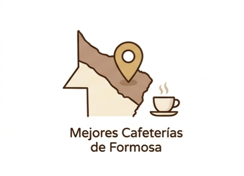
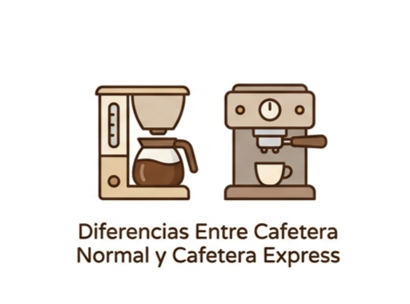
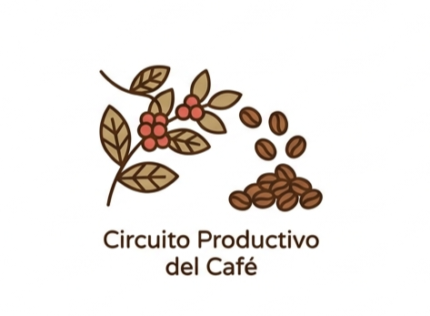

Mejores cafeterías de Formosa para visitar en 2026
Si sos amante del café o simplemente buscás un buen lugar para relajarte, Formosa tiene opciones que combinan sabor, ambiente y experiencias únicas. Acá te dejamos un top 5 de cafeterías que vale la pena visitar: ADN Café de especialidad – Ideal para quienes buscan café de calidad y una propuesta más moderna, con opciones de especialidad que marcan la diferencia. Café Martínez – Un clásico que nunca falla, perfecto para reuniones, meriendas y disfrutar de una carta variada. Bonafide – Tradición cafetera con un ambiente cálido, ideal para una pausa en el día. Puerto de Palos – Muy elegido por su ambiente cómodo y amplio, perfecto para ir con amigos o trabajar un rato. Café Catedral Formosa – Una opción más tranquila y acogedora, ideal para disfrutar de un café en un entorno relajado.
Postres únicos y deliciosos sin horno para acompañar el café
1. Crepas Dulces de Tapioca Estilo Brasileño Ingredientes: - 1 taza de harina de tapioca - 1 taza de leche - 1 huevo - 2 cucharadas de azúcar - 1 pizca de sal - Relleno: dulce de leche, frutas frescas, chocolate derretido, etc. Instrucciones: 1. En un bol, mezcla la harina de tapioca, la leche, el huevo, el azúcar y la sal hasta obtener una masa suave. 2. Calienta una sartén antiadherente a fuego medio y vierte un poco de la mezcla para formar una crepa delgada. 3. Cocina por unos minutos hasta que los bordes se despeguen y luego voltea para cocinar el otro lado. 4. Rellena con tu elección de dulce de leche, frutas o chocolate y disfruta con tu café. 2.Rollos Monte Cristo con Mermelada de Guayaba Ingredientes: - 4 rebanadas de pan de molde - 2 rebanadas de jamón - 2 rebanadas de queso - 1 huevo - 1/4 taza de leche - Mermelada de guayaba para servir Instrucciones: 1. Coloca una rebanada de jamón y una de queso entre dos rebanadas de pan para formar un sándwich. 2. En un bol, bate el huevo con la leche. 3. Sumerge el sándwich en la mezcla de huevo, asegurándote de que quede bien empapado. 4. Cocina en una sartén antiadherente a fuego medio hasta que esté dorado por ambos lados. 5. Sirve con una cucharada de mermelada de guayaba para un contraste dulce que complementa perfectamente el café.

Diferencias entre cafetera normal y cafetera express
Las principales diferencias entre cafetera normal y cafetera express la encuentras en el sabor, el color, textura e intensidad de aroma. Cafetera Normal Podemos llamar cafetera normal al método de filtrado. Bien sea por extracción de goteo que utiliza filtro de papel, tela o acero inoxidable. Existen modelos manuales y automáticos, son muy prácticos y fáciles de usar, pero si gustas del café fuerte, no es la mejor opción para ti. Pues, se obtiene un café negro de cuerpo suave, baja acidez, sabores tenues y ligero. Que por lo general se degusta solo o con leche, pero no es un café apto para preparar recetas como café americano, capuchino, moka, entre otros. Cafetera Express Las cafeteras express son aquellas que utilizan presión durante la extracción del café. Existen modelos sencillos como la cafetera moka o italiana que usan el calor y el vapor para ejercer la presión entre el agua y el poso de café. Mientras otras como las cafeteras express de Create son máquinas automáticas, electrodomésticas con las que se prepara crema de café o café espresso. Para ello, durante la extracción requieren ejercer presión de 8 a 10 atmósferas por unos 30 segundos con agua a 90 °C sobre el café de molido fino para lograr un café con cuerpo cremoso, acidez equilibrada, de muchos matices en sabor y muy aromático. 4 diferencias entre cafetera normal y cafetera express: -1. Tueste Para una cafetera normal requiere que el grano de café sea de tueste ligero, que conserve la acidez. Para una cafetera express se utilizan granos de tueste oscuro que requieren menos tiempo de contacto con el agua para obtener sabores y aromas intensos y un cuerpo cremoso para mezclar con cremas o leche. -Molienda Como siempre recomiendo moler el café en grano al momento, para así aprovechar mejor sus propiedades organolépticas, pero cada método requiere una molienda distinta. La cafetera normal precisa de una molienda gruesa, mientras que la cafetera express emplea un molido muy fino, casi como el polvo. -Tiempo La cafetera express debe su nombre a la rapidez con la cual obtienes la extracción del café. Una vez colocados los ingredientes y enciendes la máquina, en 30 segundos tendrás tu taza lista para degustar. La cafetera normal o de filtro requiere más tiempo de contacto entre el agua y el café molido para lograr una preparación satisfactoria. -Sabor El café filtrado tiene su encanto, para quienes buscan una bebida ligera y con pocas opciones de sabor. El café espresso es el rey de las preparaciones, del sabor y aroma. Además de ser la forma más rápida y pura de preparar, el café espresso brinda más opciones para degustar y mezclar con leche y otros ingredientes. Incluso para resaltar los sabores y aromas en preparaciones con chocolate, naranjas, canela y otras especies.

Circuito productivo del Café: Etapas y proceso comercial
El circuito productivo del café se concentra en zonas particularmente tropicales como lo son Brasil y Colombia (dos de los mayores productores del mundo). Un dato curioso es que casi la mitad de la producción mundial de café tiene lugar en Sudamérica. En este articulo conocerás los eslabones de producción del café y todo su proceso productivo completo paso a paso. 1. Cultivo del café El cultivo del café comienza con la siembra de las semillas en viveros, donde se cuidan hasta que las plántulas estén listas para ser trasplantadas a los campos de cultivo. El café requiere condiciones específicas de clima y suelo para crecer adecuadamente, lo que hace que su producción esté limitada a ciertas regiones del mundo. 2. Cosecha La cosecha del café se realiza generalmente en períodos específicos del año, dependiendo de la región y las condiciones climáticas. Es un proceso delicado que requiere habilidad y experiencia para obtener granos de calidad. 3. Procesamiento Después de la cosecha, los granos de café deben ser procesados para eliminar la pulpa y la cáscara. Existen diferentes métodos de procesamiento, como el método húmedo, el método seco y el método semi-húmedo, cada uno con sus propias características y efectos en el sabor final del café. 4. Secado El proceso de secado es crucial para reducir el contenido de agua en los granos de café y prevenir la fermentación. Este paso puede realizarse bajo condiciones naturales o mediante el uso de secadores mecánicos, dependiendo del método de procesamiento empleado. 5. Tostado El tostado es el proceso que transforma los granos de café verdes en los granos tostados que conocemos. Durante el tostado, los granos experimentan cambios químicos y físicos que afectan su sabor, aroma y color. El grado de tostado puede variar desde claro hasta oscuro, cada uno con sus propias características de sabor. 6. Comercialización La comercialización del café implica la distribución y venta de los productos terminados a los consumidores finales. Este proceso incluye empaque, etiquetado, logística y marketing para asegurar que el café llegue a los mercados deseados con la calidad y presentación adecuadas.
Café Expreso: ¿Qué es y cómo hacer el mejor espresso?
El café expreso es una bebida de café concentrada que se prepara
forzando agua caliente a alta presión a través de café molido
fino. Es conocido por su sabor intenso, cuerpo cremoso y aroma
distintivo. Para hacer el mejor espresso, es importante seguir
algunos pasos clave:
1. Selección del café: Elige granos de café de alta calidad,
preferiblemente de tueste oscuro, que son ideales para el
espresso.
2. Molienda: Muele los granos de café justo antes de preparar el
espresso, utilizando una molienda fina, similar a la textura del
polvo.
3. Dosificación: Utiliza la cantidad adecuada de café molido,
generalmente entre 18 y 20 gramos para una dosis doble de
espresso.
4. Compactación: Compacta el café molido en el portafiltro con una
presión uniforme para asegurar una extracción uniforme.
5. Extracción: Coloca el portafiltro en la máquina de espresso y
comienza la extracción. El proceso debería durar entre 25 y 30
segundos, produciendo un espresso con una capa de crema dorada en
la parte superior. 6. Disfrute: Sirve el espresso inmediatamente
para disfrutar de su sabor y aroma en su máxima expresión. Puedes
disfrutarlo solo o utilizarlo como base para otras bebidas de
café, como capuchinos o lattes.
¿Cómo descalcificar y limpiar una cafetera?
¿Sabes por qué debes descalcificar la cafetera?
Como recordarás, el café contiene varios elementos, entre ellos
aceites que se adhieren a distintas partes de la cafetera. Sin
importar, sea cual sea su modelo. Mientras, por otro lado, el agua
que utilizamos para su preparación también contiene elementos
químicos, imperceptibles a nuestra vista y gusto, tales como la
cal, que se acumula en las superficies de la cafetera. Esta
combinación puede generar obstrucciones, mal sabor, mal olor y
daño a tu cafetera o cualquier otro artefacto en el que mezcles
agua con otro ingrediente. Por eso, es importante descalcificar y
limpiar tu cafetera regularmente para mantener su rendimiento y
prolongar su vida útil.
¿Cuándo se debe descalcificar la cafetera?
Depende de la frecuencia de uso de la cafetera, si se trata de una
cafetera de uso intensivo, comercial o de barismo profesional debe
hacerse una vez al mes. En el caso de cafeteras con uso menos
frecuente, como las del hogar o la oficina, con programar una
descalcificación cada seis meses es suficiente. No obstante, si
notas un mal funcionamiento, fallas en el flujo del agua, un sabor
desagradable en el café o depósitos de sarro en los contenedores
de la cafetera, pues es hora de limpiar.
Descalcificar y limpiar una cafetera: Paso a paso
En líneas generales para todos los modelos de cafeteras se hace lo
siguiente:
* Desconectar de la energía eléctrica si es el caso.
* Separar las partes frágiles o de vidrio.
* Extraer filtro o cestas de contención de poso y todo componente
removible que indique las instrucciones para su lavado.
¿Cómo limpiar una cafetera de filtro o goteo?
1. Mezcla partes iguales de agua y vinagre blanco en el depósito
de agua de la cafetera.
2. Enciende la cafetera y deja que el ciclo de preparación se
complete, permitiendo que la mezcla de vinagre y agua pase a
través del sistema.
3. Una vez que el ciclo haya terminado, apaga la cafetera y deja
reposar la mezcla durante unos 15 minutos para que el vinagre
actúe sobre los depósitos de cal.
4. Vacía el depósito de agua y enjuágalo bien para eliminar
cualquier residuo de vinagre.
5. Llena el depósito con agua limpia y realiza al menos dos ciclos
de preparación completos para asegurarte de eliminar cualquier
sabor o olor a vinagre.
6. Limpia las partes removibles con agua tibia y jabón,
asegurándote de eliminar cualquier residuo de café o vinagre.